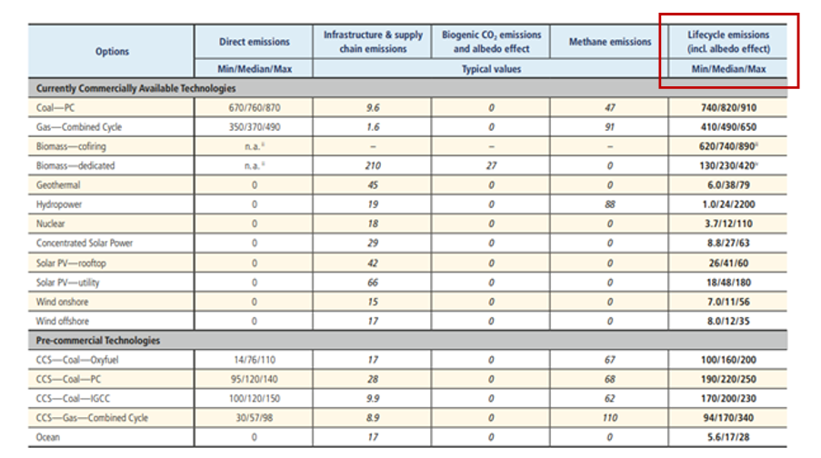
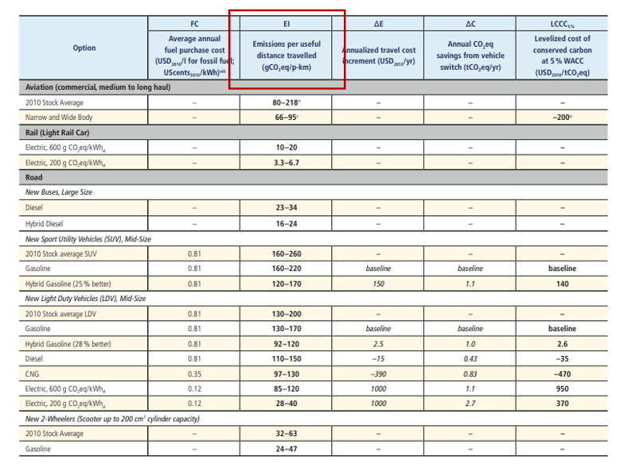
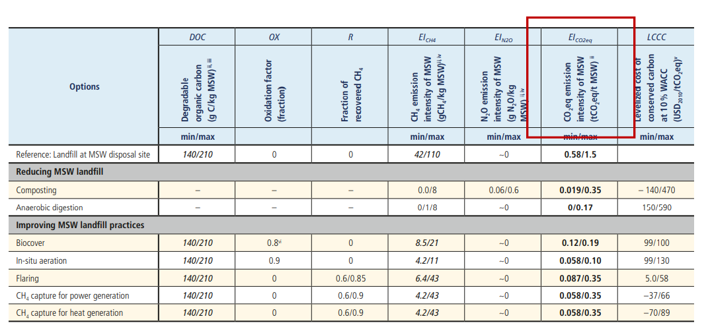
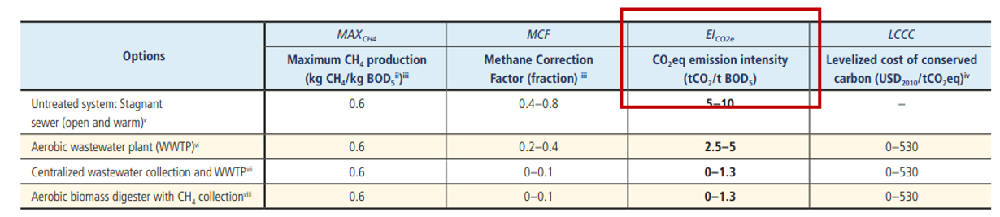

Following mini-lecture 3.2, this mini-lecture provides an insight into estimating infrastructure carbon emissions. Ideally, carbon emissions data can be sourced from relevant country stakeholders. However, in many cases the data is not available or insufficient and infrastructure emissions need to be estimated. This mini-lecture outlines a methodology for calculating these emissions.
Mini-lecture 3.3 presents the method for estimating gross emissions utilised by Adshead et al. (2018). This simplified method to estimate the gross carbon emissions of infrastructure systems includes the following steps:
Step 1: Identify the carbon emissions per unit for each type of infrastructure asset. The carbon emissions per unit is known as the capacity factor. For example, the capacity factor of a hydropower system would be measured in tCO2eq/kWh (tonnes of carbon dioxide equivalent per kilo watt hour).
Step 2: Identify the capacity of the infrastructure assets.
Step 3: Conduct any unit conversion needed. Following on from the previous example, if the given capacity factor of a hydropower plant is reported to be 25 gCO2eq/kWh (grams of carbon dioxide equivalent per kilo watt hour) and its capacity is 10 GWh (giga watt hour), unit conversion needs to take place to ensure correct calculation. The conversion would be as follows:
1g = 0.000001 tonnes
Therefore: 25 gCO2eq/kWh= 0.000025 tCO2eq/kWh
1 GWh= 1,000,000 kWh
Therefore: 10 GWh= 10,000,000 kWh
Step 4: Multiply the capacity factor by the capacity of an infrastructure asset to determine its gross emissions as shown in the equation below.
\(Gross\ Carbon\ Emissions\ (\text{tCO}_{2}eq) = Capacity\ Factor\ \times Capacity\)
For instance, the hydropower plant:
Gross Carbon Emissions= 0.000025 x 10,000,000 = 250 tCO2eq annually.
Emissions capacity factors can be sourced from a variety of academic and institutional research. One such source, Intergovernmental Panel on Climate Change (2014), provides a summary assessment of capacity factors for various sectors as well as more detailed methodologies for determining carbon emissions. They note that the availability and quality of carbon emission data vary significantly across sectors. Further details of their process of collating research from various sources can be found in the report.
The following sections present the available capacity factors for the energy, transportation, wastewater and waste infrastructure systems. Where minimum, median, and/or maximum factors are given, estimates can be made using the median or average value.
The capacity factors for the energy system are described as the lifecycle emissions and are measured in gCO2eq/kWh as shown in Figure 3.3.1 below.

Figure 3.3.1: Emissions of electricity supply technologies (Intergovernmental Panel on Climate Change 2014)
The capacity factor for the transportation system is noted as gCO2eq/p-km (grams of carbon dioxide equivalent per passenger kilometre). The capacity would therefore be the number of kilometres traversed by passengers using a particular transportation mode. Intergovernmental Panel on Climate Change (2014) specified data for commercially available technologies, depicted in Figure 3.3.2 below, and expected future passenger and freight transportation.

Figure 3.3.2: Passenger transport emissions factors for commercially available technologies (Intergovernmental Panel on Climate Change 2014)
Intergovernmental Panel on Climate Change (2014) notes several capacity factors for Municipal Solid Waste (MSW) given the two common greenhouse gases emitted from landfills:
Methane emissions: Measured in gCH4/kg MSW (grams of methane per kilogram of Municipal Solid Waste)
Nitrous oxide emissions: Measured in gN2O/kg MSW (grams of nitrous oxide per kilogram of Municipal Solid Waste)
These values are then combined and converted to tCO2eq/t MSW (tonne of carbon dioxide equivalent per tonne of Municipal Solid Waste) (see Figure 3.3.3). This factor would be used to calculate gross carbon emissions.

Figure 3.3.3: Depiction of the capacity factors for waste treatment technologies (Intergovernmental Panel on Climate Change 2014)
The capacity factor for wastewater is stated in tCO2eq/tBOD5 (tonnes of carbon dioxide equivalent per tonne of biological oxygen demand) as seen in Figure 3.3.4 below.

Figure 3.3.4: Wastewater capacity factor (Intergovernmental Panel on Climate Change 2014).
Mini-lecture 3.3 illustrated a simple method for estimating the carbon emissions of infrastructure systems in lieu of detailed in-country data. The mini-lecture further pointed towards a good source of carbon emission capacity factors: Intergovernmental Panel on Climate Change (2014).